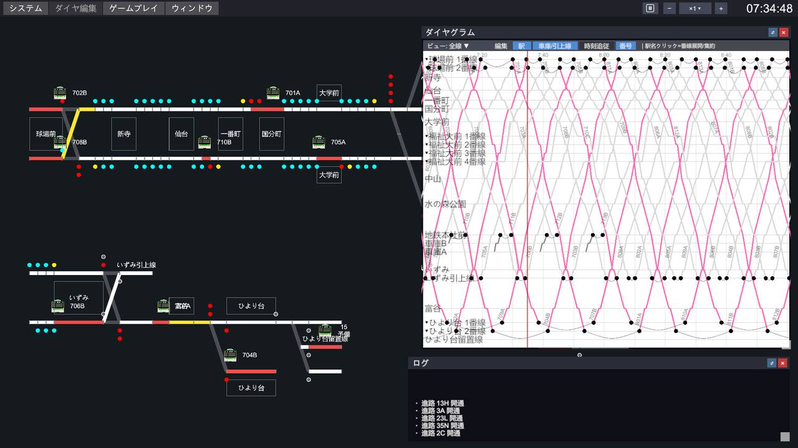

特色
調度台上，應有盡有。
FEATURE 01
全線狀況，一目了然。
即時顯示全線列車佔用、號誌與已開通進路的 CTC 控制盤。哪個車站列車塞住了、誤點會往哪裡擴散——控制盤會告訴你一切。點擊列車，它接下來要經過的進路就會以橘色標示出來。

FEATURE 02
讀懂運行線。
調度員的武器是運行圖。計畫的運行線、納入誤點的預測與實績重疊繪製，讓你預先看清混亂的走向。在控制盤與運行線兩個畫面之間來回、構思下一步——這正是調度的樂趣所在。

FEATURE 03
用調度，找回秩序。
車輛故障——就發生在早上尖峰的正線上。調度的工作，正是從這樣最糟糕的瞬間開始。扣車、延後發車、臨時停車、臨時通過、折返、提前終止。打出運轉整理的手牌，把節節潰散的運行圖重新穩住。

FEATURE 04
結果，用數字說話。
每個情境都有過關條件與評定，誤點壓到了什麼程度、守住了多少班次，都會以數字呈現。同樣的混亂，調度不同，結果也不同。反覆挑戰，找出最好的運轉整理吧。

FEATURE 05
運行圖，由你親手繪製。
運行圖編輯功能讓你親手一條一條設計運行線。停車時間、會車、折返運用都能自由安排。「自己的運行圖」化為數百班列車開始奔馳的那一刻，是無與倫比的快感。

FEATURE 06
從喜歡的時段，開始調度。
在沙盒中選好路線與運行圖後，不只能「從首班車開始」，還能以 1 小時為單位從任意時段開始。反覆練習傍晚尖峰，或只看深夜的入庫——不必用倍速等上幾十分鐘。障礙也能在任何地點自己製造。